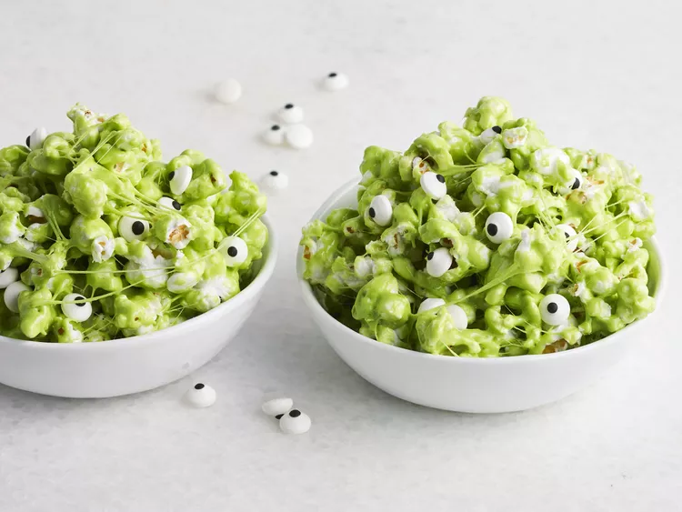

Slime Popcorn

Description:
Sticky, ooey gooey marshmallow popcorn is perfect for Halloween. Just add some green food dye, candy eyeballs, and you have a slime monster!
Ingredients:
- 10 cups popped popcorn
- 1/2 cup packed brown sugar
- 1/4 cup butter
- 1 (16 oz) package marshmallows
- 5 drops green food coloring
- 1/2 cup candy eyeballs
Steps:
- Pour popcorn into a large bowl
- Melt brown sugar and butter together in a saucepan over medium heat, stirring often. Stir in marshmallows until melted and smooth. Stir in green food coloring until color is evenly distributed. Pour mixture over popcorn and stir until evenly coated. Sprinkle in candy eyeballs.